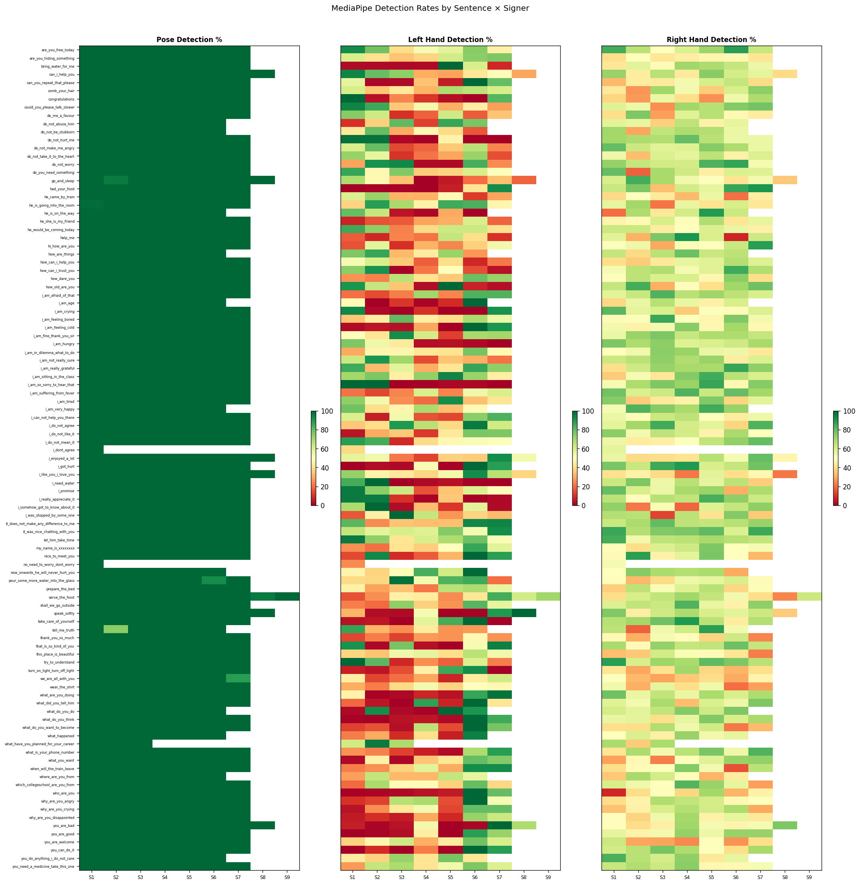

| Sentence | Signer | Frames | FPS | Pose% | L-Hand% | R-Hand% | Gaps | Max Gap | Status |
|---|---|---|---|---|---|---|---|---|---|
| He is going into the room | 1 | 130 | 25.0 | 98.46% | 37.69% | 56.15% | 2 | 1 | cached |
| He is going into the room | 2 | 100 | 25.0 | 100.0% | 88.0% | 70.0% | 0 | 0 | cached |
| He is going into the room | 3 | 75 | 25.0 | 100.0% | 69.33% | 21.33% | 0 | 0 | cached |
| He is going into the room | 4 | 146 | 25.0 | 100.0% | 45.89% | 55.48% | 0 | 0 | cached |
| He is going into the room | 5 | 114 | 25.0 | 100.0% | 85.09% | 41.23% | 0 | 0 | cached |
| He is going into the room | 6 | 128 | 25.0 | 100.0% | 83.59% | 60.16% | 0 | 0 | cached |
| He is going into the room | 7 | 113 | 25.0 | 100.0% | 46.9% | 42.48% | 0 | 0 | cached |
| No need to worry dont worry | 1 | 97 | 25.0 | 100.0% | 24.74% | 52.58% | 0 | 0 | cached |
| This place is beautiful | 1 | 105 | 25.0 | 100.0% | 38.1% | 33.33% | 0 | 0 | cached |
| This place is beautiful | 2 | 128 | 25.0 | 100.0% | 34.38% | 35.16% | 0 | 0 | cached |
| This place is beautiful | 3 | 95 | 25.0 | 100.0% | 53.68% | 61.05% | 0 | 0 | cached |
| This place is beautiful | 4 | 112 | 25.0 | 100.0% | 56.25% | 51.79% | 0 | 0 | cached |
| This place is beautiful | 5 | 97 | 25.0 | 100.0% | 40.21% | 48.45% | 0 | 0 | cached |
| This place is beautiful | 6 | 50 | 25.0 | 100.0% | 66.0% | 42.0% | 0 | 0 | cached |
| This place is beautiful | 7 | 75 | 25.0 | 100.0% | 53.33% | 22.67% | 0 | 0 | cached |
| are you free today | 1 | 25 | 25.0 | 100.0% | 92.0% | 84.0% | 0 | 0 | cached |
| are you free today | 2 | 50 | 25.0 | 100.0% | 78.0% | 66.0% | 0 | 0 | cached |
| are you free today | 3 | 78 | 25.0 | 100.0% | 39.74% | 50.0% | 0 | 0 | cached |
| are you free today | 4 | 98 | 25.0 | 100.0% | 52.04% | 59.18% | 0 | 0 | cached |
| are you free today | 5 | 82 | 25.0 | 100.0% | 57.32% | 70.73% | 0 | 0 | cached |
| are you free today | 6 | 117 | 25.0 | 100.0% | 74.36% | 88.03% | 0 | 0 | cached |
| are you free today | 7 | 101 | 25.0 | 100.0% | 45.54% | 63.37% | 0 | 0 | cached |
| are you hiding something | 1 | 95 | 25.0 | 100.0% | 60.0% | 40.0% | 0 | 0 | cached |
| are you hiding something | 2 | 83 | 25.0 | 100.0% | 40.96% | 49.4% | 0 | 0 | cached |
| are you hiding something | 3 | 87 | 25.0 | 100.0% | 34.48% | 42.53% | 0 | 0 | cached |
| are you hiding something | 4 | 101 | 25.0 | 100.0% | 37.62% | 44.55% | 0 | 0 | cached |
| are you hiding something | 5 | 106 | 25.0 | 100.0% | 61.32% | 47.17% | 0 | 0 | cached |
| are you hiding something | 6 | 50 | 25.0 | 100.0% | 74.0% | 48.0% | 0 | 0 | cached |
| are you hiding something | 7 | 50 | 25.0 | 100.0% | 76.0% | 42.0% | 0 | 0 | cached |
| bring water for me | 1 | 116 | 25.0 | 100.0% | 2.59% | 42.24% | 0 | 0 | cached |
| bring water for me | 2 | 91 | 25.0 | 100.0% | 2.2% | 57.14% | 0 | 0 | cached |
| bring water for me | 3 | 90 | 25.0 | 100.0% | 2.22% | 48.89% | 0 | 0 | cached |
| bring water for me | 4 | 98 | 25.0 | 100.0% | 2.04% | 70.41% | 0 | 0 | cached |
| bring water for me | 5 | 50 | 25.0 | 100.0% | 100.0% | 68.0% | 0 | 0 | cached |
| bring water for me | 6 | 50 | 25.0 | 100.0% | 60.0% | 64.0% | 0 | 0 | cached |
| bring water for me | 7 | 97 | 25.0 | 100.0% | 8.25% | 54.64% | 0 | 0 | cached |
| can i help you | 1 | 50 | 25.0 | 100.0% | 94.0% | 72.0% | 0 | 0 | cached |
| can i help you | 2 | 75 | 25.0 | 100.0% | 80.0% | 44.0% | 0 | 0 | cached |
| can i help you | 3 | 95 | 25.0 | 100.0% | 73.68% | 66.32% | 0 | 0 | cached |
| can i help you | 4 | 76 | 25.0 | 100.0% | 30.26% | 43.42% | 0 | 0 | cached |
| can i help you | 5 | 105 | 25.0 | 100.0% | 28.57% | 74.29% | 0 | 0 | cached |
| can i help you | 6 | 92 | 25.0 | 100.0% | 42.39% | 60.87% | 0 | 0 | cached |
| can i help you | 7 | 99 | 25.0 | 100.0% | 48.48% | 56.57% | 0 | 0 | cached |
| can i help you | 8 | 110 | 25.0 | 100.0% | 29.09% | 39.09% | 0 | 0 | cached |
| can you repeat that please | 1 | 110 | 25.0 | 100.0% | 56.36% | 32.73% | 0 | 0 | cached |
| can you repeat that please | 2 | 109 | 25.0 | 100.0% | 1.83% | 44.04% | 0 | 0 | cached |
| can you repeat that please | 3 | 92 | 25.0 | 100.0% | 2.17% | 43.48% | 0 | 0 | cached |
| can you repeat that please | 4 | 100 | 25.0 | 100.0% | 34.0% | 53.0% | 0 | 0 | cached |
| can you repeat that please | 5 | 101 | 25.0 | 100.0% | 5.94% | 60.4% | 0 | 0 | cached |
| can you repeat that please | 6 | 25 | 25.0 | 100.0% | 100.0% | 64.0% | 0 | 0 | cached |
| can you repeat that please | 7 | 99 | 25.0 | 100.0% | 79.8% | 39.39% | 0 | 0 | cached |
| comb your hair | 1 | 91 | 25.0 | 100.0% | 60.44% | 42.86% | 0 | 0 | cached |
| comb your hair | 2 | 140 | 25.0 | 100.0% | 35.0% | 26.43% | 0 | 0 | cached |
| comb your hair | 3 | 98 | 25.0 | 100.0% | 42.86% | 70.41% | 0 | 0 | cached |
| comb your hair | 4 | 98 | 25.0 | 100.0% | 31.63% | 53.06% | 0 | 0 | cached |
| comb your hair | 5 | 50 | 25.0 | 100.0% | 68.0% | 36.0% | 0 | 0 | cached |
| comb your hair | 6 | 75 | 25.0 | 100.0% | 65.33% | 60.0% | 0 | 0 | cached |
| comb your hair | 7 | 128 | 25.0 | 100.0% | 60.16% | 73.44% | 0 | 0 | cached |
| congratulations | 1 | 50 | 25.0 | 100.0% | 100.0% | 38.0% | 0 | 0 | cached |
| congratulations | 2 | 81 | 25.0 | 100.0% | 3.7% | 27.16% | 0 | 0 | cached |
| congratulations | 3 | 62 | 25.0 | 100.0% | 24.19% | 54.84% | 0 | 0 | cached |
| congratulations | 4 | 90 | 25.0 | 100.0% | 11.11% | 40.0% | 0 | 0 | cached |
| congratulations | 5 | 63 | 25.0 | 100.0% | 3.17% | 25.4% | 0 | 0 | cached |
| congratulations | 6 | 54 | 25.0 | 100.0% | 0.0% | 53.7% | 0 | 0 | cached |
| congratulations | 7 | 50 | 25.0 | 100.0% | 82.0% | 68.0% | 0 | 0 | cached |
| could you please talk slower | 1 | 50 | 25.0 | 100.0% | 94.0% | 58.0% | 0 | 0 | cached |
| could you please talk slower | 2 | 75 | 25.0 | 100.0% | 85.33% | 54.67% | 0 | 0 | cached |
| could you please talk slower | 3 | 141 | 25.0 | 100.0% | 35.46% | 25.53% | 0 | 0 | cached |
| could you please talk slower | 4 | 119 | 25.0 | 100.0% | 52.94% | 70.59% | 0 | 0 | cached |
| could you please talk slower | 5 | 105 | 25.0 | 100.0% | 30.48% | 66.67% | 0 | 0 | cached |
| could you please talk slower | 6 | 120 | 25.0 | 100.0% | 45.0% | 75.0% | 0 | 0 | cached |
| could you please talk slower | 7 | 115 | 25.0 | 100.0% | 27.83% | 77.39% | 0 | 0 | cached |
| do me a favour | 1 | 75 | 25.0 | 100.0% | 74.67% | 40.0% | 0 | 0 | cached |
| do me a favour | 2 | 50 | 25.0 | 100.0% | 62.0% | 76.0% | 0 | 0 | cached |
| do me a favour | 3 | 79 | 25.0 | 100.0% | 10.13% | 27.85% | 0 | 0 | cached |
| do me a favour | 4 | 110 | 25.0 | 100.0% | 18.18% | 58.18% | 0 | 0 | cached |
| do me a favour | 5 | 87 | 25.0 | 100.0% | 62.07% | 66.67% | 0 | 0 | cached |
| do me a favour | 6 | 98 | 25.0 | 100.0% | 17.35% | 47.96% | 0 | 0 | cached |
| do me a favour | 7 | 95 | 25.0 | 100.0% | 34.74% | 44.21% | 0 | 0 | cached |
| do not abuse him | 1 | 182 | 25.0 | 100.0% | 10.44% | 57.14% | 0 | 0 | cached |
| do not abuse him | 2 | 128 | 25.0 | 100.0% | 36.72% | 55.47% | 0 | 0 | cached |
| do not abuse him | 3 | 146 | 25.0 | 100.0% | 80.82% | 36.99% | 0 | 0 | cached |
| do not abuse him | 4 | 140 | 25.0 | 100.0% | 12.86% | 65.0% | 0 | 0 | cached |
| do not abuse him | 5 | 50 | 25.0 | 100.0% | 86.0% | 46.0% | 0 | 0 | cached |
| do not abuse him | 6 | 150 | 25.0 | 100.0% | 76.67% | 56.0% | 0 | 0 | cached |
| do not be stubborn | 1 | 75 | 25.0 | 100.0% | 42.67% | 70.67% | 0 | 0 | cached |
| do not be stubborn | 2 | 100 | 25.0 | 100.0% | 80.0% | 29.0% | 0 | 0 | cached |
| do not be stubborn | 3 | 130 | 25.0 | 100.0% | 30.0% | 64.62% | 0 | 0 | cached |
| do not be stubborn | 4 | 158 | 25.0 | 100.0% | 47.47% | 68.35% | 0 | 0 | cached |
| do not be stubborn | 5 | 122 | 25.0 | 100.0% | 39.34% | 67.21% | 0 | 0 | cached |
| do not be stubborn | 6 | 115 | 25.0 | 100.0% | 16.52% | 54.78% | 0 | 0 | cached |
| do not hurt me | 1 | 50 | 25.0 | 100.0% | 98.0% | 70.0% | 0 | 0 | cached |
| do not hurt me | 2 | 75 | 25.0 | 100.0% | 97.33% | 68.0% | 0 | 0 | cached |
| do not hurt me | 3 | 107 | 25.0 | 100.0% | 1.87% | 67.29% | 0 | 0 | cached |
| do not hurt me | 4 | 84 | 25.0 | 100.0% | 0.0% | 79.76% | 0 | 0 | cached |
| do not hurt me | 5 | 127 | 25.0 | 100.0% | 46.46% | 66.14% | 0 | 0 | cached |
| do not hurt me | 6 | 109 | 25.0 | 100.0% | 0.0% | 55.05% | 0 | 0 | cached |
| do not hurt me | 7 | 89 | 25.0 | 100.0% | 0.0% | 55.06% | 0 | 0 | cached |
| do not make me angry | 1 | 50 | 25.0 | 100.0% | 60.0% | 80.0% | 0 | 0 | cached |
| do not make me angry | 2 | 75 | 25.0 | 100.0% | 80.0% | 62.67% | 0 | 0 | cached |
| do not make me angry | 3 | 97 | 25.0 | 100.0% | 14.43% | 57.73% | 0 | 0 | cached |
| do not make me angry | 4 | 108 | 25.0 | 100.0% | 18.52% | 58.33% | 0 | 0 | cached |
| do not make me angry | 5 | 95 | 25.0 | 100.0% | 35.79% | 74.74% | 0 | 0 | cached |
| do not make me angry | 6 | 91 | 25.0 | 100.0% | 65.93% | 68.13% | 0 | 0 | cached |
| do not make me angry | 7 | 100 | 25.0 | 100.0% | 24.0% | 55.0% | 0 | 0 | cached |
| do not take it to the heart | 1 | 50 | 25.0 | 100.0% | 72.0% | 54.0% | 0 | 0 | cached |
| do not take it to the heart | 2 | 75 | 25.0 | 100.0% | 56.0% | 33.33% | 0 | 0 | cached |
| do not take it to the heart | 3 | 120 | 25.0 | 100.0% | 10.83% | 59.17% | 0 | 0 | cached |
| do not take it to the heart | 4 | 122 | 25.0 | 100.0% | 21.31% | 56.56% | 0 | 0 | cached |
| do not take it to the heart | 5 | 113 | 25.0 | 100.0% | 29.2% | 65.49% | 0 | 0 | cached |
| do not take it to the heart | 6 | 109 | 25.0 | 100.0% | 71.56% | 45.87% | 0 | 0 | cached |
| do not take it to the heart | 7 | 119 | 25.0 | 100.0% | 15.13% | 58.82% | 0 | 0 | cached |
| do not worry | 1 | 105 | 25.0 | 100.0% | 28.57% | 72.38% | 0 | 0 | cached |
| do not worry | 2 | 75 | 25.0 | 100.0% | 90.67% | 64.0% | 0 | 0 | cached |
| do not worry | 3 | 75 | 25.0 | 100.0% | 93.33% | 61.33% | 0 | 0 | cached |
| do not worry | 4 | 98 | 25.0 | 100.0% | 2.04% | 61.22% | 0 | 0 | cached |
| do not worry | 5 | 88 | 25.0 | 100.0% | 2.27% | 82.95% | 0 | 0 | cached |
| do not worry | 6 | 104 | 25.0 | 100.0% | 83.65% | 86.54% | 0 | 0 | cached |
| do not worry | 7 | 97 | 25.0 | 100.0% | 24.74% | 52.58% | 0 | 0 | cached |
| do you need something | 1 | 50 | 25.0 | 100.0% | 86.0% | 80.0% | 0 | 0 | cached |
| do you need something | 2 | 50 | 25.0 | 100.0% | 48.0% | 18.0% | 0 | 0 | cached |
| do you need something | 3 | 144 | 25.0 | 100.0% | 75.69% | 69.44% | 0 | 0 | cached |
| do you need something | 4 | 157 | 25.0 | 100.0% | 36.31% | 61.78% | 0 | 0 | cached |
| do you need something | 5 | 101 | 25.0 | 100.0% | 37.62% | 44.55% | 0 | 0 | cached |
| do you need something | 6 | 140 | 25.0 | 100.0% | 60.0% | 59.29% | 0 | 0 | cached |
| do you need something | 7 | 113 | 25.0 | 100.0% | 50.44% | 58.41% | 0 | 0 | cached |
| go and sleep | 1 | 50 | 25.0 | 100.0% | 68.0% | 60.0% | 0 | 0 | cached |
| go and sleep | 2 | 50 | 25.0 | 96.0% | 48.0% | 84.0% | 1 | 2 | cached |
| go and sleep | 3 | 143 | 25.0 | 100.0% | 34.27% | 69.23% | 0 | 0 | cached |
| go and sleep | 4 | 67 | 25.0 | 100.0% | 0.0% | 53.73% | 0 | 0 | cached |
| go and sleep | 5 | 89 | 25.0 | 100.0% | 5.62% | 50.56% | 0 | 0 | cached |
| go and sleep | 6 | 99 | 25.0 | 100.0% | 20.2% | 41.41% | 0 | 0 | cached |
| go and sleep | 7 | 89 | 25.0 | 100.0% | 33.71% | 52.81% | 0 | 0 | cached |
| go and sleep | 8 | 102 | 25.0 | 100.0% | 18.63% | 35.29% | 0 | 0 | cached |
| had your food | 1 | 89 | 25.0 | 100.0% | 0.0% | 62.92% | 0 | 0 | ok |
| had your food | 2 | 87 | 25.0 | 100.0% | 1.15% | 75.86% | 0 | 0 | ok |
| had your food | 3 | 101 | 25.0 | 100.0% | 0.99% | 33.66% | 0 | 0 | ok |
| had your food | 4 | 93 | 25.0 | 100.0% | 0.0% | 61.29% | 0 | 0 | ok |
| had your food | 5 | 91 | 25.0 | 100.0% | 6.59% | 56.04% | 0 | 0 | ok |
| had your food | 6 | 50 | 25.0 | 100.0% | 42.0% | 86.0% | 0 | 0 | ok |
| had your food | 7 | 50 | 25.0 | 100.0% | 92.0% | 90.0% | 0 | 0 | ok |
| he came by train | 1 | 100 | 25.0 | 100.0% | 59.0% | 39.0% | 0 | 0 | ok |
| he came by train | 2 | 50 | 25.0 | 100.0% | 72.0% | 50.0% | 0 | 0 | ok |
| he came by train | 3 | 99 | 25.0 | 100.0% | 31.31% | 43.43% | 0 | 0 | ok |
| he came by train | 4 | 116 | 25.0 | 100.0% | 31.03% | 32.76% | 0 | 0 | ok |
| he came by train | 5 | 106 | 25.0 | 100.0% | 48.11% | 54.72% | 0 | 0 | ok |
| he came by train | 6 | 127 | 25.0 | 100.0% | 11.81% | 20.47% | 0 | 0 | ok |
| he came by train | 7 | 112 | 25.0 | 100.0% | 28.57% | 44.64% | 0 | 0 | ok |
| he is on the way | 1 | 25 | 25.0 | 100.0% | 80.0% | 20.0% | 0 | 0 | ok |
| he is on the way | 2 | 25 | 25.0 | 100.0% | 64.0% | 68.0% | 0 | 0 | ok |
| he is on the way | 3 | 114 | 25.0 | 100.0% | 4.39% | 42.98% | 0 | 0 | ok |
| he is on the way | 4 | 118 | 25.0 | 100.0% | 1.69% | 61.02% | 0 | 0 | ok |
| he is on the way | 5 | 91 | 25.0 | 100.0% | 29.67% | 89.01% | 0 | 0 | ok |
| he is on the way | 6 | 86 | 25.0 | 100.0% | 1.16% | 62.79% | 0 | 0 | ok |
| he she is my friend | 1 | 90 | 25.0 | 100.0% | 7.78% | 46.67% | 0 | 0 | ok |
| he she is my friend | 2 | 83 | 25.0 | 100.0% | 15.66% | 48.19% | 0 | 0 | ok |
| he she is my friend | 3 | 76 | 25.0 | 100.0% | 17.11% | 60.53% | 0 | 0 | ok |
| he she is my friend | 4 | 94 | 25.0 | 100.0% | 28.72% | 51.06% | 0 | 0 | ok |
| he she is my friend | 5 | 78 | 25.0 | 100.0% | 30.77% | 67.95% | 0 | 0 | ok |
| he she is my friend | 6 | 50 | 25.0 | 100.0% | 60.0% | 42.0% | 0 | 0 | ok |
| he she is my friend | 7 | 75 | 25.0 | 100.0% | 18.67% | 56.0% | 0 | 0 | ok |
| he would be coming today | 1 | 75 | 25.0 | 100.0% | 85.33% | 62.67% | 0 | 0 | ok |
| he would be coming today | 2 | 75 | 25.0 | 100.0% | 73.33% | 62.67% | 0 | 0 | ok |
| he would be coming today | 3 | 108 | 25.0 | 100.0% | 23.15% | 44.44% | 0 | 0 | ok |
| he would be coming today | 4 | 138 | 25.0 | 100.0% | 39.13% | 50.0% | 0 | 0 | ok |
| he would be coming today | 5 | 157 | 25.0 | 100.0% | 62.42% | 58.6% | 0 | 0 | ok |
| he would be coming today | 6 | 132 | 25.0 | 100.0% | 62.12% | 55.3% | 0 | 0 | ok |
| he would be coming today | 7 | 110 | 25.0 | 100.0% | 40.91% | 45.45% | 0 | 0 | ok |
| help me | 1 | 104 | 25.0 | 100.0% | 17.31% | 57.69% | 0 | 0 | ok |
| help me | 2 | 84 | 25.0 | 100.0% | 8.33% | 30.95% | 0 | 0 | ok |
| help me | 3 | 76 | 25.0 | 100.0% | 23.68% | 76.32% | 0 | 0 | ok |
| help me | 4 | 71 | 25.0 | 100.0% | 21.13% | 90.14% | 0 | 0 | ok |
| help me | 5 | 25 | 25.0 | 100.0% | 64.0% | 60.0% | 0 | 0 | ok |
| help me | 6 | 25 | 25.0 | 100.0% | 40.0% | 8.0% | 0 | 0 | ok |
| help me | 7 | 98 | 25.0 | 100.0% | 10.2% | 62.24% | 0 | 0 | ok |
| hi how are you | 1 | 75 | 25.0 | 100.0% | 16.0% | 50.67% | 0 | 0 | ok |
| hi how are you | 2 | 100 | 25.0 | 100.0% | 57.0% | 54.0% | 0 | 0 | ok |
| hi how are you | 3 | 112 | 25.0 | 100.0% | 9.82% | 29.46% | 0 | 0 | ok |
| hi how are you | 4 | 156 | 25.0 | 100.0% | 31.41% | 51.28% | 0 | 0 | ok |
| hi how are you | 5 | 104 | 25.0 | 100.0% | 24.04% | 50.0% | 0 | 0 | ok |
| hi how are you | 6 | 108 | 25.0 | 100.0% | 37.04% | 62.96% | 0 | 0 | ok |
| hi how are you | 7 | 92 | 25.0 | 100.0% | 53.26% | 88.04% | 0 | 0 | ok |
| how are things | 1 | 25 | 25.0 | 100.0% | 76.0% | 64.0% | 0 | 0 | ok |
| how are things | 2 | 100 | 25.0 | 100.0% | 86.0% | 39.0% | 0 | 0 | ok |
| how are things | 3 | 150 | 25.0 | 100.0% | 32.67% | 66.0% | 0 | 0 | ok |
| how are things | 4 | 165 | 25.0 | 100.0% | 44.24% | 78.79% | 0 | 0 | ok |
| how are things | 5 | 186 | 25.0 | 100.0% | 71.51% | 62.9% | 0 | 0 | ok |
| how are things | 6 | 190 | 25.0 | 100.0% | 26.84% | 65.26% | 0 | 0 | ok |
| how can i help you | 1 | 25 | 25.0 | 100.0% | 52.0% | 40.0% | 0 | 0 | ok |
| how can i help you | 2 | 50 | 25.0 | 100.0% | 60.0% | 36.0% | 0 | 0 | ok |
| how can i help you | 3 | 135 | 25.0 | 100.0% | 35.56% | 42.96% | 0 | 0 | ok |
| how can i help you | 4 | 91 | 25.0 | 100.0% | 17.58% | 56.04% | 0 | 0 | ok |
| how can i help you | 5 | 86 | 25.0 | 100.0% | 39.53% | 58.14% | 0 | 0 | ok |
| how can i help you | 6 | 97 | 25.0 | 100.0% | 8.25% | 67.01% | 0 | 0 | ok |
| how can i help you | 7 | 91 | 25.0 | 100.0% | 21.98% | 58.24% | 0 | 0 | ok |
| how can i trust you | 1 | 50 | 25.0 | 100.0% | 74.0% | 52.0% | 0 | 0 | ok |
| how can i trust you | 2 | 75 | 25.0 | 100.0% | 90.67% | 65.33% | 0 | 0 | ok |
| how can i trust you | 3 | 96 | 25.0 | 100.0% | 1.04% | 67.71% | 0 | 0 | ok |
| how can i trust you | 4 | 156 | 25.0 | 100.0% | 21.79% | 52.56% | 0 | 0 | ok |
| how can i trust you | 5 | 124 | 25.0 | 100.0% | 50.0% | 58.06% | 0 | 0 | ok |
| how can i trust you | 6 | 114 | 25.0 | 100.0% | 14.91% | 85.09% | 0 | 0 | ok |
| how can i trust you | 7 | 117 | 25.0 | 100.0% | 4.27% | 67.52% | 0 | 0 | ok |
| how dare you | 1 | 77 | 25.0 | 100.0% | 25.97% | 49.35% | 0 | 0 | ok |
| how dare you | 2 | 95 | 25.0 | 100.0% | 23.16% | 65.26% | 0 | 0 | ok |
| how dare you | 3 | 79 | 25.0 | 100.0% | 65.82% | 59.49% | 0 | 0 | ok |
| how dare you | 4 | 90 | 25.0 | 100.0% | 41.11% | 60.0% | 0 | 0 | ok |
| how dare you | 5 | 93 | 25.0 | 100.0% | 35.48% | 47.31% | 0 | 0 | ok |
| how dare you | 6 | 100 | 25.0 | 100.0% | 79.0% | 74.0% | 0 | 0 | ok |
| how dare you | 7 | 50 | 25.0 | 100.0% | 72.0% | 40.0% | 0 | 0 | ok |
| how old are you | 1 | 50 | 25.0 | 100.0% | 90.0% | 64.0% | 0 | 0 | ok |
| how old are you | 2 | 50 | 25.0 | 100.0% | 64.0% | 84.0% | 0 | 0 | ok |
| how old are you | 3 | 111 | 25.0 | 100.0% | 35.14% | 30.63% | 0 | 0 | ok |
| how old are you | 4 | 109 | 25.0 | 100.0% | 2.75% | 49.54% | 0 | 0 | ok |
| how old are you | 5 | 97 | 25.0 | 100.0% | 100.0% | 40.21% | 0 | 0 | ok |
| how old are you | 6 | 81 | 25.0 | 100.0% | 7.41% | 70.37% | 0 | 0 | ok |
| how old are you | 7 | 87 | 25.0 | 100.0% | 3.45% | 78.16% | 0 | 0 | ok |
| i am (age) | 1 | 86 | 25.0 | 100.0% | 48.84% | 38.37% | 0 | 0 | ok |
| i am (age) | 2 | 74 | 25.0 | 100.0% | 0.0% | 55.41% | 0 | 0 | ok |
| i am (age) | 3 | 63 | 25.0 | 100.0% | 11.11% | 66.67% | 0 | 0 | ok |
| i am (age) | 4 | 72 | 25.0 | 100.0% | 1.39% | 55.56% | 0 | 0 | ok |
| i am (age) | 5 | 66 | 25.0 | 100.0% | 9.09% | 45.45% | 0 | 0 | ok |
| i am (age) | 6 | 50 | 25.0 | 100.0% | 100.0% | 60.0% | 0 | 0 | ok |
| i am afraid of that | 1 | 122 | 25.0 | 100.0% | 20.49% | 57.38% | 0 | 0 | ok |
| i am afraid of that | 2 | 151 | 25.0 | 100.0% | 14.57% | 63.58% | 0 | 0 | ok |
| i am afraid of that | 3 | 110 | 25.0 | 100.0% | 22.73% | 82.73% | 0 | 0 | ok |
| i am afraid of that | 4 | 118 | 25.0 | 100.0% | 70.34% | 66.1% | 0 | 0 | ok |
| i am afraid of that | 5 | 124 | 25.0 | 100.0% | 24.19% | 70.97% | 0 | 0 | ok |
| i am afraid of that | 6 | 75 | 25.0 | 100.0% | 82.67% | 65.33% | 0 | 0 | ok |
| i am afraid of that | 7 | 75 | 25.0 | 100.0% | 82.67% | 60.0% | 0 | 0 | ok |
| i am crying | 1 | 75 | 25.0 | 100.0% | 93.33% | 81.33% | 0 | 0 | ok |
| i am crying | 2 | 96 | 25.0 | 100.0% | 2.08% | 56.25% | 0 | 0 | ok |
| i am crying | 3 | 77 | 25.0 | 100.0% | 0.0% | 59.74% | 0 | 0 | ok |
| i am crying | 4 | 98 | 25.0 | 100.0% | 10.2% | 35.71% | 0 | 0 | ok |
| i am crying | 5 | 111 | 25.0 | 100.0% | 0.0% | 50.45% | 0 | 0 | ok |
| i am crying | 6 | 82 | 25.0 | 100.0% | 0.0% | 48.78% | 0 | 0 | ok |
| i am crying | 7 | 75 | 25.0 | 100.0% | 90.67% | 58.67% | 0 | 0 | ok |
| i am feeling bored | 1 | 74 | 25.0 | 100.0% | 35.14% | 48.65% | 0 | 0 | ok |
| i am feeling bored | 2 | 122 | 25.0 | 100.0% | 44.26% | 50.82% | 0 | 0 | ok |
| i am feeling bored | 3 | 119 | 25.0 | 100.0% | 80.67% | 85.71% | 0 | 0 | ok |
| i am feeling bored | 4 | 101 | 25.0 | 100.0% | 44.55% | 50.5% | 0 | 0 | ok |
| i am feeling bored | 5 | 96 | 25.0 | 100.0% | 39.58% | 46.88% | 0 | 0 | ok |
| i am feeling bored | 6 | 99 | 25.0 | 100.0% | 68.69% | 75.76% | 0 | 0 | ok |
| i am feeling bored | 7 | 75 | 25.0 | 100.0% | 54.67% | 53.33% | 0 | 0 | ok |
| i am feeling cold | 1 | 77 | 25.0 | 100.0% | 2.6% | 53.25% | 0 | 0 | ok |
| i am feeling cold | 2 | 83 | 25.0 | 100.0% | 4.82% | 45.78% | 0 | 0 | ok |
| i am feeling cold | 3 | 81 | 25.0 | 100.0% | 3.7% | 53.09% | 0 | 0 | ok |
| i am feeling cold | 4 | 82 | 25.0 | 100.0% | 29.27% | 74.39% | 0 | 0 | ok |
| i am feeling cold | 5 | 76 | 25.0 | 100.0% | 0.0% | 47.37% | 0 | 0 | ok |
| i am feeling cold | 6 | 50 | 25.0 | 100.0% | 100.0% | 70.0% | 0 | 0 | ok |
| i am feeling cold | 7 | 50 | 25.0 | 100.0% | 90.0% | 48.0% | 0 | 0 | ok |
| i am fine. thank you sir | 1 | 109 | 25.0 | 100.0% | 49.54% | 55.05% | 0 | 0 | ok |
| i am fine. thank you sir | 2 | 138 | 25.0 | 100.0% | 42.03% | 71.74% | 0 | 0 | ok |
| i am fine. thank you sir | 3 | 102 | 25.0 | 100.0% | 92.16% | 76.47% | 0 | 0 | ok |
| i am fine. thank you sir | 4 | 129 | 25.0 | 100.0% | 61.24% | 63.57% | 0 | 0 | ok |
| i am fine. thank you sir | 5 | 132 | 25.0 | 100.0% | 12.88% | 68.18% | 0 | 0 | ok |
| i am fine. thank you sir | 6 | 75 | 25.0 | 100.0% | 69.33% | 68.0% | 0 | 0 | ok |
| i am fine. thank you sir | 7 | 50 | 25.0 | 100.0% | 70.0% | 64.0% | 0 | 0 | ok |
| i am hungry | 1 | 50 | 25.0 | 100.0% | 76.0% | 76.0% | 0 | 0 | ok |
| i am hungry | 2 | 50 | 25.0 | 100.0% | 54.0% | 68.0% | 0 | 0 | ok |
| i am hungry | 3 | 103 | 25.0 | 100.0% | 43.69% | 73.79% | 0 | 0 | ok |
| i am hungry | 4 | 127 | 25.0 | 100.0% | 3.15% | 58.27% | 0 | 0 | ok |
| i am hungry | 5 | 106 | 25.0 | 100.0% | 3.77% | 59.43% | 0 | 0 | ok |
| i am hungry | 6 | 100 | 25.0 | 100.0% | 2.0% | 62.0% | 0 | 0 | ok |
| i am hungry | 7 | 104 | 25.0 | 100.0% | 0.0% | 69.23% | 0 | 0 | ok |
| i am in dilemma what to do | 1 | 153 | 25.0 | 100.0% | 29.41% | 50.33% | 0 | 0 | ok |
| i am in dilemma what to do | 2 | 183 | 25.0 | 100.0% | 46.99% | 53.55% | 0 | 0 | ok |
| i am in dilemma what to do | 3 | 192 | 25.0 | 100.0% | 46.88% | 73.96% | 0 | 0 | ok |
| i am in dilemma what to do | 4 | 141 | 25.0 | 100.0% | 42.55% | 71.63% | 0 | 0 | ok |
| i am in dilemma what to do | 5 | 168 | 25.0 | 100.0% | 41.07% | 55.36% | 0 | 0 | ok |
| i am in dilemma what to do | 6 | 75 | 25.0 | 100.0% | 77.33% | 54.67% | 0 | 0 | ok |
| i am in dilemma what to do | 7 | 125 | 25.0 | 100.0% | 48.0% | 43.2% | 0 | 0 | ok |
| i am not really sure | 1 | 78 | 25.0 | 100.0% | 62.82% | 62.82% | 0 | 0 | ok |
| i am not really sure | 2 | 50 | 25.0 | 100.0% | 90.0% | 66.0% | 0 | 0 | ok |
| i am not really sure | 3 | 75 | 25.0 | 100.0% | 70.67% | 73.33% | 0 | 0 | ok |
| i am not really sure | 4 | 103 | 25.0 | 100.0% | 14.56% | 67.96% | 0 | 0 | ok |
| i am not really sure | 5 | 81 | 25.0 | 100.0% | 34.57% | 71.6% | 0 | 0 | ok |
| i am not really sure | 6 | 95 | 25.0 | 100.0% | 30.53% | 44.21% | 0 | 0 | ok |
| i am not really sure | 7 | 100 | 25.0 | 100.0% | 21.0% | 59.0% | 0 | 0 | ok |
| i am really grateful | 1 | 133 | 25.0 | 100.0% | 84.96% | 39.85% | 0 | 0 | ok |
| i am really grateful | 2 | 131 | 25.0 | 100.0% | 32.82% | 61.83% | 0 | 0 | ok |
| i am really grateful | 3 | 93 | 25.0 | 100.0% | 56.99% | 72.04% | 0 | 0 | ok |
| i am really grateful | 4 | 120 | 25.0 | 100.0% | 30.83% | 69.17% | 0 | 0 | ok |
| i am really grateful | 5 | 110 | 25.0 | 100.0% | 41.82% | 69.09% | 0 | 0 | ok |
| i am really grateful | 6 | 50 | 25.0 | 100.0% | 86.0% | 86.0% | 0 | 0 | ok |
| i am really grateful | 7 | 75 | 25.0 | 100.0% | 73.33% | 73.33% | 0 | 0 | ok |
| i am sitting in the class | 1 | 50 | 25.0 | 100.0% | 70.0% | 36.0% | 0 | 0 | ok |
| i am sitting in the class | 2 | 100 | 25.0 | 100.0% | 76.0% | 52.0% | 0 | 0 | ok |
| i am sitting in the class | 3 | 160 | 25.0 | 100.0% | 45.0% | 42.5% | 0 | 0 | ok |
| i am sitting in the class | 4 | 173 | 25.0 | 100.0% | 72.83% | 75.14% | 0 | 0 | ok |
| i am sitting in the class | 5 | 177 | 25.0 | 100.0% | 93.79% | 84.75% | 0 | 0 | ok |
| i am sitting in the class | 6 | 176 | 25.0 | 100.0% | 71.59% | 65.91% | 0 | 0 | ok |
| i am sitting in the class | 7 | 149 | 25.0 | 100.0% | 44.97% | 59.73% | 0 | 0 | ok |
| i am so sorry to hear that | 1 | 25 | 25.0 | 100.0% | 100.0% | 52.0% | 0 | 0 | ok |
| i am so sorry to hear that | 2 | 75 | 25.0 | 100.0% | 100.0% | 68.0% | 0 | 0 | ok |
| i am so sorry to hear that | 3 | 88 | 25.0 | 100.0% | 0.0% | 76.14% | 0 | 0 | ok |
| i am so sorry to hear that | 4 | 131 | 25.0 | 100.0% | 0.76% | 71.76% | 0 | 0 | ok |
| i am so sorry to hear that | 5 | 115 | 25.0 | 100.0% | 1.74% | 86.09% | 0 | 0 | ok |
| i am so sorry to hear that | 6 | 113 | 25.0 | 100.0% | 1.77% | 47.79% | 0 | 0 | ok |
| i am so sorry to hear that | 7 | 123 | 25.0 | 100.0% | 0.0% | 74.8% | 0 | 0 | ok |
| i am suffering from fever | 1 | 72 | 25.0 | 100.0% | 20.83% | 77.78% | 0 | 0 | ok |
| i am suffering from fever | 2 | 100 | 25.0 | 100.0% | 14.0% | 59.0% | 0 | 0 | ok |
| i am suffering from fever | 3 | 101 | 25.0 | 100.0% | 23.76% | 62.38% | 0 | 0 | ok |
| i am suffering from fever | 4 | 97 | 25.0 | 100.0% | 59.79% | 82.47% | 0 | 0 | ok |
| i am suffering from fever | 5 | 98 | 25.0 | 100.0% | 23.47% | 63.27% | 0 | 0 | ok |
| i am suffering from fever | 6 | 50 | 25.0 | 100.0% | 54.0% | 80.0% | 0 | 0 | ok |
| i am suffering from fever | 7 | 50 | 25.0 | 100.0% | 60.0% | 70.0% | 0 | 0 | ok |
| i am tired | 1 | 75 | 25.0 | 100.0% | 73.33% | 74.67% | 0 | 0 | ok |
| i am tired | 2 | 75 | 25.0 | 100.0% | 53.33% | 36.0% | 0 | 0 | ok |
| i am tired | 3 | 95 | 25.0 | 100.0% | 25.26% | 43.16% | 0 | 0 | ok |
| i am tired | 4 | 102 | 25.0 | 100.0% | 19.61% | 46.08% | 0 | 0 | ok |
| i am tired | 5 | 74 | 25.0 | 100.0% | 91.89% | 75.68% | 0 | 0 | ok |
| i am tired | 6 | 116 | 25.0 | 100.0% | 33.62% | 37.93% | 0 | 0 | ok |
| i am tired | 7 | 105 | 25.0 | 100.0% | 41.9% | 57.14% | 0 | 0 | ok |
| i am very happy | 1 | 50 | 25.0 | 100.0% | 78.0% | 52.0% | 0 | 0 | ok |
| i am very happy | 2 | 75 | 25.0 | 100.0% | 40.0% | 82.67% | 0 | 0 | ok |
| i am very happy | 3 | 87 | 25.0 | 100.0% | 47.13% | 74.71% | 0 | 0 | ok |
| i am very happy | 4 | 74 | 25.0 | 100.0% | 68.92% | 68.92% | 0 | 0 | ok |
| i am very happy | 5 | 110 | 25.0 | 100.0% | 33.64% | 84.55% | 0 | 0 | ok |
| i am very happy | 6 | 89 | 25.0 | 100.0% | 48.31% | 71.91% | 0 | 0 | ok |
| i can not help you there | 1 | 128 | 25.0 | 100.0% | 59.38% | 54.69% | 0 | 0 | ok |
| i can not help you there | 2 | 109 | 25.0 | 100.0% | 6.42% | 48.62% | 0 | 0 | ok |
| i can not help you there | 3 | 94 | 25.0 | 100.0% | 53.19% | 62.77% | 0 | 0 | ok |
| i can not help you there | 4 | 101 | 25.0 | 100.0% | 15.84% | 65.35% | 0 | 0 | ok |
| i can not help you there | 5 | 86 | 25.0 | 100.0% | 13.95% | 50.0% | 0 | 0 | ok |
| i can not help you there | 6 | 50 | 25.0 | 100.0% | 74.0% | 44.0% | 0 | 0 | ok |
| i can not help you there | 7 | 100 | 25.0 | 100.0% | 83.0% | 54.0% | 0 | 0 | ok |
| i do not agree | 1 | 102 | 25.0 | 100.0% | 35.29% | 56.86% | 0 | 0 | ok |
| i do not agree | 2 | 110 | 25.0 | 100.0% | 40.0% | 70.0% | 0 | 0 | ok |
| i do not agree | 3 | 110 | 25.0 | 100.0% | 89.09% | 84.55% | 0 | 0 | ok |
| i do not agree | 4 | 130 | 25.0 | 100.0% | 66.15% | 60.77% | 0 | 0 | ok |
| i do not agree | 5 | 100 | 25.0 | 100.0% | 39.0% | 57.0% | 0 | 0 | ok |
| i do not agree | 6 | 50 | 25.0 | 100.0% | 96.0% | 38.0% | 0 | 0 | ok |
| i do not agree | 7 | 75 | 25.0 | 100.0% | 61.33% | 82.67% | 0 | 0 | ok |
| i do not like it | 1 | 88 | 25.0 | 100.0% | 4.55% | 73.86% | 0 | 0 | ok |
| i do not like it | 2 | 104 | 25.0 | 100.0% | 29.81% | 52.88% | 0 | 0 | ok |
| i do not like it | 3 | 109 | 25.0 | 100.0% | 35.78% | 65.14% | 0 | 0 | ok |
| i do not like it | 4 | 105 | 25.0 | 100.0% | 11.43% | 60.95% | 0 | 0 | ok |
| i do not like it | 5 | 110 | 25.0 | 100.0% | 42.73% | 46.36% | 0 | 0 | ok |
| i do not like it | 6 | 4500 | 25.0 | 99.98% | 76.67% | 68.78% | 1 | 1 | ok |
| i do not like it | 7 | 100 | 25.0 | 100.0% | 76.0% | 50.0% | 0 | 0 | ok |
| i do not mean it | 1 | 75 | 25.0 | 100.0% | 88.0% | 54.67% | 0 | 0 | ok |
| i do not mean it | 2 | 100 | 25.0 | 100.0% | 84.0% | 44.0% | 0 | 0 | ok |
| i do not mean it | 3 | 149 | 25.0 | 100.0% | 8.72% | 44.97% | 0 | 0 | ok |
| i do not mean it | 4 | 125 | 25.0 | 100.0% | 39.2% | 50.4% | 0 | 0 | ok |
| i do not mean it | 5 | 107 | 25.0 | 100.0% | 47.66% | 64.49% | 0 | 0 | ok |
| i do not mean it | 6 | 173 | 25.0 | 100.0% | 51.45% | 72.83% | 0 | 0 | ok |
| i do not mean it | 7 | 105 | 25.0 | 100.0% | 50.48% | 80.0% | 0 | 0 | ok |
| i dont agree | 1 | 100 | 25.0 | 100.0% | 39.0% | 57.0% | 0 | 0 | ok |
| i enjoyed a lot | 1 | 83 | 25.0 | 100.0% | 56.63% | 55.42% | 0 | 0 | ok |
| i enjoyed a lot | 2 | 71 | 25.0 | 100.0% | 53.52% | 39.44% | 0 | 0 | ok |
| i enjoyed a lot | 3 | 96 | 25.0 | 100.0% | 21.88% | 39.58% | 0 | 0 | ok |
| i enjoyed a lot | 4 | 112 | 25.0 | 100.0% | 13.39% | 41.07% | 0 | 0 | ok |
| i enjoyed a lot | 5 | 99 | 25.0 | 100.0% | 37.37% | 66.67% | 0 | 0 | ok |
| i enjoyed a lot | 6 | 94 | 25.0 | 100.0% | 36.17% | 52.13% | 0 | 0 | ok |
| i enjoyed a lot | 7 | 50 | 25.0 | 100.0% | 92.0% | 80.0% | 0 | 0 | ok |
| i enjoyed a lot | 8 | 75 | 25.0 | 100.0% | 53.33% | 46.67% | 0 | 0 | ok |
| i got hurt | 1 | 95 | 25.0 | 100.0% | 0.0% | 76.84% | 0 | 0 | ok |
| i got hurt | 2 | 106 | 25.0 | 100.0% | 2.83% | 63.21% | 0 | 0 | ok |
| i got hurt | 3 | 95 | 25.0 | 100.0% | 2.11% | 85.26% | 0 | 0 | ok |
| i got hurt | 4 | 120 | 25.0 | 100.0% | 51.67% | 89.17% | 0 | 0 | ok |
| i got hurt | 5 | 97 | 25.0 | 100.0% | 1.03% | 59.79% | 0 | 0 | ok |
| i got hurt | 6 | 75 | 25.0 | 100.0% | 100.0% | 64.0% | 0 | 0 | ok |
| i got hurt | 7 | 50 | 25.0 | 100.0% | 88.0% | 78.0% | 0 | 0 | ok |
| i like you i love you | 1 | 76 | 25.0 | 100.0% | 72.37% | 40.79% | 0 | 0 | ok |
| i like you i love you | 2 | 76 | 25.0 | 100.0% | 46.05% | 46.05% | 0 | 0 | ok |
| i like you i love you | 3 | 79 | 25.0 | 100.0% | 43.04% | 39.24% | 0 | 0 | ok |
| i like you i love you | 4 | 97 | 25.0 | 100.0% | 38.14% | 21.65% | 0 | 0 | ok |
| i like you i love you | 5 | 77 | 25.0 | 100.0% | 53.25% | 57.14% | 0 | 0 | ok |
| i like you i love you | 6 | 75 | 25.0 | 100.0% | 92.0% | 40.0% | 0 | 0 | ok |
| i like you i love you | 7 | 75 | 25.0 | 100.0% | 66.67% | 48.0% | 0 | 0 | ok |
| i like you i love you | 8 | 97 | 25.0 | 100.0% | 38.14% | 21.65% | 0 | 0 | ok |
| i need water | 1 | 75 | 25.0 | 100.0% | 84.0% | 62.67% | 0 | 0 | ok |
| i need water | 2 | 75 | 25.0 | 100.0% | 100.0% | 76.0% | 0 | 0 | ok |
| i need water | 3 | 125 | 25.0 | 100.0% | 0.0% | 54.4% | 0 | 0 | ok |
| i need water | 4 | 98 | 25.0 | 100.0% | 2.04% | 66.33% | 0 | 0 | ok |
| i need water | 5 | 106 | 25.0 | 100.0% | 3.77% | 56.6% | 0 | 0 | ok |
| i need water | 6 | 133 | 25.0 | 100.0% | 0.0% | 65.41% | 0 | 0 | ok |
| i need water | 7 | 131 | 25.0 | 100.0% | 0.0% | 36.64% | 0 | 0 | ok |
| i promise | 1 | 50 | 25.0 | 100.0% | 96.0% | 80.0% | 0 | 0 | ok |
| i promise | 2 | 50 | 25.0 | 100.0% | 74.0% | 60.0% | 0 | 0 | ok |
| i promise | 3 | 109 | 25.0 | 100.0% | 62.39% | 55.05% | 0 | 0 | ok |
| i promise | 4 | 94 | 25.0 | 100.0% | 15.96% | 69.15% | 0 | 0 | ok |
| i promise | 5 | 95 | 25.0 | 100.0% | 34.74% | 71.58% | 0 | 0 | ok |
| i promise | 6 | 91 | 25.0 | 100.0% | 59.34% | 30.77% | 0 | 0 | ok |
| i promise | 7 | 88 | 25.0 | 100.0% | 51.14% | 68.18% | 0 | 0 | ok |
| i really appreciate it | 1 | 50 | 25.0 | 100.0% | 96.0% | 66.0% | 0 | 0 | ok |
| i really appreciate it | 2 | 75 | 25.0 | 100.0% | 96.0% | 49.33% | 0 | 0 | ok |
| i really appreciate it | 3 | 105 | 25.0 | 100.0% | 10.48% | 66.67% | 0 | 0 | ok |
| i really appreciate it | 4 | 116 | 25.0 | 100.0% | 0.86% | 64.66% | 0 | 0 | ok |
| i really appreciate it | 5 | 99 | 25.0 | 100.0% | 35.35% | 83.84% | 0 | 0 | ok |
| i really appreciate it | 6 | 93 | 25.0 | 100.0% | 1.08% | 73.12% | 0 | 0 | ok |
| i really appreciate it | 7 | 90 | 25.0 | 100.0% | 2.22% | 62.22% | 0 | 0 | ok |
| i somehow got to know about it | 1 | 99 | 25.0 | 100.0% | 68.69% | 72.73% | 0 | 0 | ok |
| i somehow got to know about it | 2 | 50 | 25.0 | 100.0% | 100.0% | 22.0% | 0 | 0 | ok |
| i somehow got to know about it | 3 | 104 | 25.0 | 100.0% | 2.88% | 51.92% | 0 | 0 | ok |
| i somehow got to know about it | 4 | 149 | 25.0 | 100.0% | 33.56% | 18.79% | 0 | 0 | ok |
| i somehow got to know about it | 5 | 146 | 25.0 | 100.0% | 10.96% | 58.22% | 0 | 0 | ok |
| i somehow got to know about it | 6 | 122 | 25.0 | 100.0% | 57.38% | 63.93% | 0 | 0 | ok |
| i somehow got to know about it | 7 | 116 | 25.0 | 100.0% | 2.59% | 73.28% | 0 | 0 | ok |
| i was stopped by some one | 1 | 121 | 25.0 | 100.0% | 16.53% | 66.94% | 0 | 0 | ok |
| i was stopped by some one | 2 | 116 | 25.0 | 100.0% | 45.69% | 66.38% | 0 | 0 | ok |
| i was stopped by some one | 3 | 125 | 25.0 | 100.0% | 100.0% | 13.6% | 0 | 0 | ok |
| i was stopped by some one | 4 | 75 | 25.0 | 100.0% | 64.0% | 65.33% | 0 | 0 | ok |
| i was stopped by some one | 5 | 129 | 25.0 | 100.0% | 26.36% | 41.09% | 0 | 0 | ok |
| i was stopped by some one | 6 | 104 | 25.0 | 100.0% | 37.5% | 75.0% | 0 | 0 | ok |
| i was stopped by some one | 7 | 118 | 25.0 | 100.0% | 33.05% | 35.59% | 0 | 0 | ok |
| it does not make any difference to me | 1 | 155 | 25.0 | 100.0% | 81.29% | 63.23% | 0 | 0 | ok |
| it does not make any difference to me | 2 | 121 | 25.0 | 100.0% | 24.79% | 68.6% | 0 | 0 | ok |
| it does not make any difference to me | 3 | 121 | 25.0 | 100.0% | 34.71% | 80.17% | 0 | 0 | ok |
| it does not make any difference to me | 4 | 126 | 25.0 | 100.0% | 33.33% | 65.08% | 0 | 0 | ok |
| it does not make any difference to me | 5 | 109 | 25.0 | 100.0% | 33.94% | 64.22% | 0 | 0 | ok |
| it does not make any difference to me | 6 | 75 | 25.0 | 100.0% | 93.33% | 66.67% | 0 | 0 | ok |
| it does not make any difference to me | 7 | 50 | 25.0 | 100.0% | 94.0% | 72.0% | 0 | 0 | ok |
| it was nice chatting with you | 1 | 135 | 25.0 | 100.0% | 64.44% | 85.93% | 0 | 0 | ok |
| it was nice chatting with you | 2 | 130 | 25.0 | 100.0% | 56.92% | 66.92% | 0 | 0 | ok |
| it was nice chatting with you | 3 | 126 | 25.0 | 100.0% | 60.32% | 75.4% | 0 | 0 | ok |
| it was nice chatting with you | 4 | 127 | 25.0 | 100.0% | 58.27% | 76.38% | 0 | 0 | ok |
| it was nice chatting with you | 5 | 134 | 25.0 | 100.0% | 75.37% | 80.6% | 0 | 0 | ok |
| it was nice chatting with you | 6 | 100 | 25.0 | 100.0% | 53.0% | 59.0% | 0 | 0 | ok |
| it was nice chatting with you | 7 | 75 | 25.0 | 100.0% | 92.0% | 85.33% | 0 | 0 | ok |
| let him take time | 1 | 75 | 25.0 | 100.0% | 96.0% | 84.0% | 0 | 0 | ok |
| let him take time | 2 | 75 | 25.0 | 100.0% | 73.33% | 53.33% | 0 | 0 | ok |
| let him take time | 3 | 86 | 25.0 | 100.0% | 41.86% | 65.12% | 0 | 0 | ok |
| let him take time | 4 | 117 | 25.0 | 100.0% | 59.83% | 65.81% | 0 | 0 | ok |
| let him take time | 5 | 101 | 25.0 | 100.0% | 68.32% | 69.31% | 0 | 0 | ok |
| let him take time | 6 | 90 | 25.0 | 100.0% | 78.89% | 66.67% | 0 | 0 | ok |
| let him take time | 7 | 95 | 25.0 | 100.0% | 51.58% | 64.21% | 0 | 0 | ok |
| my name is xxxxxxxx | 1 | 86 | 25.0 | 100.0% | 25.58% | 51.16% | 0 | 0 | ok |
| my name is xxxxxxxx | 2 | 88 | 25.0 | 100.0% | 20.45% | 39.77% | 0 | 0 | ok |
| my name is xxxxxxxx | 3 | 56 | 25.0 | 100.0% | 41.07% | 58.93% | 0 | 0 | ok |
| my name is xxxxxxxx | 4 | 71 | 25.0 | 100.0% | 36.62% | 61.97% | 0 | 0 | ok |
| my name is xxxxxxxx | 5 | 67 | 25.0 | 100.0% | 49.25% | 76.12% | 0 | 0 | ok |
| my name is xxxxxxxx | 6 | 50 | 25.0 | 100.0% | 86.0% | 50.0% | 0 | 0 | ok |
| my name is xxxxxxxx | 7 | 75 | 25.0 | 100.0% | 57.33% | 52.0% | 0 | 0 | ok |
| nice to meet you | 1 | 118 | 25.0 | 100.0% | 14.41% | 48.31% | 0 | 0 | ok |
| nice to meet you | 2 | 115 | 25.0 | 100.0% | 93.04% | 87.83% | 0 | 0 | ok |
| nice to meet you | 3 | 111 | 25.0 | 100.0% | 9.01% | 45.95% | 0 | 0 | ok |
| nice to meet you | 4 | 128 | 25.0 | 100.0% | 17.19% | 57.03% | 0 | 0 | ok |
| nice to meet you | 5 | 94 | 25.0 | 100.0% | 31.91% | 76.6% | 0 | 0 | ok |
| nice to meet you | 6 | 50 | 25.0 | 100.0% | 100.0% | 50.0% | 0 | 0 | ok |
| nice to meet you | 7 | 99 | 25.0 | 100.0% | 87.88% | 32.32% | 0 | 0 | ok |
| now onwards he will never hurt you | 1 | 131 | 25.0 | 100.0% | 46.56% | 49.62% | 0 | 0 | ok |
| now onwards he will never hurt you | 2 | 170 | 25.0 | 100.0% | 37.65% | 74.71% | 0 | 0 | ok |
| now onwards he will never hurt you | 3 | 153 | 25.0 | 100.0% | 50.98% | 68.63% | 0 | 0 | ok |
| now onwards he will never hurt you | 4 | 179 | 25.0 | 100.0% | 83.8% | 67.04% | 0 | 0 | ok |
| now onwards he will never hurt you | 5 | 146 | 25.0 | 100.0% | 61.64% | 68.49% | 0 | 0 | ok |
| now onwards he will never hurt you | 6 | 100 | 25.0 | 100.0% | 99.0% | 30.0% | 0 | 0 | ok |
| pour some more water into the glass | 1 | 93 | 25.0 | 100.0% | 38.71% | 49.46% | 0 | 0 | ok |
| pour some more water into the glass | 2 | 96 | 25.0 | 100.0% | 38.54% | 32.29% | 0 | 0 | ok |
| pour some more water into the glass | 3 | 92 | 25.0 | 100.0% | 97.83% | 39.13% | 0 | 0 | ok |
| pour some more water into the glass | 4 | 96 | 25.0 | 100.0% | 53.12% | 54.17% | 0 | 0 | ok |
| pour some more water into the glass | 5 | 75 | 25.0 | 100.0% | 82.67% | 56.0% | 0 | 0 | ok |
| pour some more water into the glass | 6 | 100 | 25.0 | 92.0% | 85.0% | 60.0% | 3 | 4 | ok |
| pour some more water into the glass | 7 | 100 | 25.0 | 100.0% | 20.0% | 49.0% | 0 | 0 | ok |
| prepare the bed | 1 | 96 | 25.0 | 100.0% | 45.83% | 36.46% | 0 | 0 | ok |
| prepare the bed | 2 | 145 | 25.0 | 100.0% | 28.28% | 65.52% | 0 | 0 | ok |
| prepare the bed | 3 | 110 | 25.0 | 100.0% | 34.55% | 51.82% | 0 | 0 | ok |
| prepare the bed | 4 | 120 | 25.0 | 100.0% | 21.67% | 58.33% | 0 | 0 | ok |
| prepare the bed | 5 | 115 | 25.0 | 100.0% | 66.09% | 66.09% | 0 | 0 | ok |
| prepare the bed | 6 | 75 | 25.0 | 100.0% | 68.0% | 38.67% | 0 | 0 | ok |
| prepare the bed | 7 | 100 | 25.0 | 100.0% | 56.0% | 51.0% | 0 | 0 | ok |
| serve the food | 1 | 113 | 25.0 | 100.0% | 15.93% | 39.82% | 0 | 0 | ok |
| serve the food | 2 | 166 | 25.0 | 100.0% | 25.3% | 60.24% | 0 | 0 | ok |
| serve the food | 3 | 125 | 25.0 | 100.0% | 45.6% | 64.8% | 0 | 0 | ok |
| serve the food | 4 | 112 | 25.0 | 100.0% | 43.75% | 70.54% | 0 | 0 | ok |
| serve the food | 5 | 142 | 25.0 | 100.0% | 24.65% | 64.08% | 0 | 0 | ok |
| serve the food | 6 | 120 | 25.0 | 100.0% | 42.5% | 53.33% | 0 | 0 | ok |
| serve the food | 7 | 75 | 25.0 | 100.0% | 84.0% | 40.0% | 0 | 0 | ok |
| serve the food | 8 | 75 | 25.0 | 96.0% | 61.33% | 24.0% | 1 | 3 | ok |
| serve the food | 9 | 126 | 25.0 | 100.0% | 70.63% | 62.7% | 0 | 0 | ok |
| shall we go outside | 1 | 92 | 25.0 | 100.0% | 22.83% | 58.7% | 0 | 0 | ok |
| shall we go outside | 2 | 107 | 25.0 | 100.0% | 19.63% | 64.49% | 0 | 0 | ok |
| shall we go outside | 3 | 97 | 25.0 | 100.0% | 73.2% | 62.89% | 0 | 0 | ok |
| shall we go outside | 4 | 122 | 25.0 | 100.0% | 36.89% | 82.79% | 0 | 0 | ok |
| shall we go outside | 5 | 108 | 25.0 | 100.0% | 25.93% | 55.56% | 0 | 0 | ok |
| shall we go outside | 6 | 50 | 25.0 | 100.0% | 82.0% | 46.0% | 0 | 0 | ok |
| shall we go outside | 7 | 75 | 25.0 | 100.0% | 56.0% | 73.33% | 0 | 0 | ok |
| speak softly | 1 | 82 | 25.0 | 100.0% | 31.71% | 75.61% | 0 | 0 | ok |
| speak softly | 2 | 101 | 25.0 | 100.0% | 2.97% | 44.55% | 0 | 0 | ok |
| speak softly | 3 | 84 | 25.0 | 100.0% | 2.38% | 61.9% | 0 | 0 | ok |
| speak softly | 4 | 75 | 25.0 | 100.0% | 52.0% | 68.0% | 0 | 0 | ok |
| speak softly | 5 | 90 | 25.0 | 100.0% | 0.0% | 60.0% | 0 | 0 | ok |
| speak softly | 6 | 89 | 25.0 | 100.0% | 1.12% | 57.3% | 0 | 0 | ok |
| speak softly | 7 | 75 | 25.0 | 100.0% | 89.33% | 62.67% | 0 | 0 | ok |
| speak softly | 8 | 25 | 25.0 | 100.0% | 100.0% | 36.0% | 0 | 0 | ok |
| take care of yourself | 1 | 99 | 25.0 | 100.0% | 4.04% | 66.67% | 0 | 0 | ok |
| take care of yourself | 2 | 121 | 25.0 | 100.0% | 4.96% | 70.25% | 0 | 0 | ok |
| take care of yourself | 3 | 102 | 25.0 | 100.0% | 0.0% | 78.43% | 0 | 0 | ok |
| take care of yourself | 4 | 120 | 25.0 | 100.0% | 56.67% | 89.17% | 0 | 0 | ok |
| take care of yourself | 5 | 50 | 25.0 | 100.0% | 84.0% | 66.0% | 0 | 0 | ok |
| take care of yourself | 6 | 75 | 25.0 | 100.0% | 100.0% | 44.0% | 0 | 0 | ok |
| take care of yourself | 7 | 130 | 25.0 | 100.0% | 0.77% | 66.92% | 0 | 0 | ok |
| tell me truth | 1 | 75 | 25.0 | 100.0% | 86.67% | 65.33% | 0 | 0 | ok |
| tell me truth | 2 | 50 | 25.0 | 74.0% | 32.0% | 18.0% | 3 | 9 ⚠ | ok |
| tell me truth | 3 | 84 | 25.0 | 100.0% | 25.0% | 53.57% | 0 | 0 | ok |
| tell me truth | 4 | 73 | 25.0 | 100.0% | 43.84% | 61.64% | 0 | 0 | ok |
| tell me truth | 5 | 81 | 25.0 | 100.0% | 25.93% | 87.65% | 0 | 0 | ok |
| tell me truth | 6 | 77 | 25.0 | 100.0% | 27.27% | 53.25% | 0 | 0 | ok |
| thank you so much | 1 | 108 | 25.0 | 100.0% | 13.89% | 48.15% | 0 | 0 | ok |
| thank you so much | 2 | 98 | 25.0 | 100.0% | 22.45% | 30.61% | 0 | 0 | ok |
| thank you so much | 3 | 100 | 25.0 | 100.0% | 13.0% | 52.0% | 0 | 0 | ok |
| thank you so much | 4 | 81 | 25.0 | 100.0% | 27.16% | 49.38% | 0 | 0 | ok |
| thank you so much | 5 | 77 | 25.0 | 100.0% | 25.97% | 37.66% | 0 | 0 | ok |
| thank you so much | 6 | 50 | 25.0 | 100.0% | 48.0% | 62.0% | 0 | 0 | ok |
| thank you so much | 7 | 50 | 25.0 | 100.0% | 26.0% | 24.0% | 0 | 0 | ok |
| that is so kind of you | 1 | 100 | 25.0 | 100.0% | 91.0% | 69.0% | 0 | 0 | ok |
| that is so kind of you | 2 | 116 | 25.0 | 100.0% | 1.72% | 49.14% | 0 | 0 | ok |
| that is so kind of you | 3 | 87 | 25.0 | 100.0% | 77.01% | 72.41% | 0 | 0 | ok |
| that is so kind of you | 4 | 94 | 25.0 | 100.0% | 3.19% | 63.83% | 0 | 0 | ok |
| that is so kind of you | 5 | 79 | 25.0 | 100.0% | 0.0% | 64.56% | 0 | 0 | ok |
| that is so kind of you | 6 | 75 | 25.0 | 100.0% | 52.0% | 78.67% | 0 | 0 | ok |
| that is so kind of you | 7 | 75 | 25.0 | 100.0% | 94.67% | 64.0% | 0 | 0 | ok |
| try to understand | 1 | 75 | 25.0 | 100.0% | 100.0% | 88.0% | 0 | 0 | ok |
| try to understand | 2 | 75 | 25.0 | 100.0% | 81.33% | 60.0% | 0 | 0 | ok |
| try to understand | 3 | 145 | 25.0 | 100.0% | 8.28% | 71.03% | 0 | 0 | ok |
| try to understand | 4 | 139 | 25.0 | 100.0% | 25.18% | 69.06% | 0 | 0 | ok |
| try to understand | 5 | 130 | 25.0 | 100.0% | 17.69% | 80.77% | 0 | 0 | ok |
| try to understand | 6 | 145 | 25.0 | 100.0% | 58.62% | 75.86% | 0 | 0 | ok |
| try to understand | 7 | 119 | 25.0 | 100.0% | 22.69% | 66.39% | 0 | 0 | ok |
| turn on light turn off light | 1 | 74 | 25.0 | 100.0% | 6.76% | 41.89% | 0 | 0 | ok |
| turn on light turn off light | 2 | 93 | 25.0 | 100.0% | 4.3% | 29.03% | 0 | 0 | ok |
| turn on light turn off light | 3 | 66 | 25.0 | 100.0% | 15.15% | 40.91% | 0 | 0 | ok |
| turn on light turn off light | 4 | 81 | 25.0 | 100.0% | 45.68% | 70.37% | 0 | 0 | ok |
| turn on light turn off light | 5 | 75 | 25.0 | 100.0% | 85.33% | 38.67% | 0 | 0 | ok |
| turn on light turn off light | 6 | 50 | 25.0 | 100.0% | 92.0% | 32.0% | 0 | 0 | ok |
| turn on light turn off light | 7 | 65 | 25.0 | 100.0% | 0.0% | 40.0% | 0 | 0 | ok |
| we are all with you | 1 | 89 | 25.0 | 100.0% | 44.94% | 50.56% | 0 | 0 | ok |
| we are all with you | 2 | 86 | 25.0 | 100.0% | 13.95% | 32.56% | 0 | 0 | ok |
| we are all with you | 3 | 80 | 25.0 | 100.0% | 20.0% | 28.75% | 0 | 0 | ok |
| we are all with you | 4 | 99 | 25.0 | 100.0% | 29.29% | 35.35% | 0 | 0 | ok |
| we are all with you | 5 | 114 | 25.0 | 100.0% | 7.89% | 39.47% | 0 | 0 | ok |
| we are all with you | 6 | 50 | 25.0 | 100.0% | 44.0% | 30.0% | 0 | 0 | ok |
| we are all with you | 7 | 75 | 25.0 | 88.0% | 61.33% | 46.67% | 3 | 5 | ok |
| wear the shirt | 1 | 69 | 25.0 | 100.0% | 30.43% | 53.62% | 0 | 0 | ok |
| wear the shirt | 2 | 94 | 25.0 | 100.0% | 22.34% | 30.85% | 0 | 0 | ok |
| wear the shirt | 3 | 110 | 25.0 | 100.0% | 39.09% | 56.36% | 0 | 0 | ok |
| wear the shirt | 4 | 100 | 25.0 | 100.0% | 53.0% | 40.0% | 0 | 0 | ok |
| wear the shirt | 5 | 82 | 25.0 | 100.0% | 37.8% | 53.66% | 0 | 0 | ok |
| wear the shirt | 6 | 50 | 25.0 | 100.0% | 50.0% | 20.0% | 0 | 0 | ok |
| wear the shirt | 7 | 50 | 25.0 | 100.0% | 48.0% | 28.0% | 0 | 0 | ok |
| what are you doing | 1 | 93 | 25.0 | 100.0% | 46.24% | 78.49% | 0 | 0 | ok |
| what are you doing | 2 | 92 | 25.0 | 100.0% | 1.09% | 55.43% | 0 | 0 | ok |
| what are you doing | 3 | 93 | 25.0 | 100.0% | 2.15% | 64.52% | 0 | 0 | ok |
| what are you doing | 4 | 112 | 25.0 | 100.0% | 8.04% | 55.36% | 0 | 0 | ok |
| what are you doing | 5 | 99 | 25.0 | 100.0% | 4.04% | 68.69% | 0 | 0 | ok |
| what are you doing | 6 | 50 | 25.0 | 100.0% | 86.0% | 60.0% | 0 | 0 | ok |
| what are you doing | 7 | 75 | 25.0 | 100.0% | 97.33% | 68.0% | 0 | 0 | ok |
| what did you tell him | 1 | 83 | 25.0 | 100.0% | 19.28% | 57.83% | 0 | 0 | ok |
| what did you tell him | 2 | 81 | 25.0 | 100.0% | 4.94% | 53.09% | 0 | 0 | ok |
| what did you tell him | 3 | 106 | 25.0 | 100.0% | 0.0% | 68.87% | 0 | 0 | ok |
| what did you tell him | 4 | 102 | 25.0 | 100.0% | 87.25% | 33.33% | 0 | 0 | ok |
| what did you tell him | 5 | 77 | 25.0 | 100.0% | 7.79% | 59.74% | 0 | 0 | ok |
| what did you tell him | 6 | 75 | 25.0 | 100.0% | 100.0% | 54.67% | 0 | 0 | ok |
| what did you tell him | 7 | 50 | 25.0 | 100.0% | 42.0% | 76.0% | 0 | 0 | ok |
| what do you do | 1 | 92 | 25.0 | 100.0% | 2.17% | 60.87% | 0 | 0 | ok |
| what do you do | 2 | 89 | 25.0 | 100.0% | 92.13% | 57.3% | 0 | 0 | ok |
| what do you do | 3 | 99 | 25.0 | 100.0% | 2.02% | 64.65% | 0 | 0 | ok |
| what do you do | 4 | 89 | 25.0 | 100.0% | 1.12% | 75.28% | 0 | 0 | ok |
| what do you do | 5 | 50 | 25.0 | 100.0% | 100.0% | 62.0% | 0 | 0 | ok |
| what do you do | 6 | 50 | 25.0 | 100.0% | 90.0% | 76.0% | 0 | 0 | ok |
| what do you think | 1 | 99 | 25.0 | 100.0% | 1.01% | 55.56% | 0 | 0 | ok |
| what do you think | 2 | 79 | 25.0 | 100.0% | 0.0% | 56.96% | 0 | 0 | ok |
| what do you think | 3 | 75 | 25.0 | 100.0% | 4.0% | 40.0% | 0 | 0 | ok |
| what do you think | 4 | 100 | 25.0 | 100.0% | 5.0% | 56.0% | 0 | 0 | ok |
| what do you think | 5 | 86 | 25.0 | 100.0% | 2.33% | 75.58% | 0 | 0 | ok |
| what do you think | 6 | 25 | 25.0 | 100.0% | 100.0% | 60.0% | 0 | 0 | ok |
| what do you think | 7 | 100 | 25.0 | 100.0% | 85.0% | 69.0% | 0 | 0 | ok |
| what do you want to become | 1 | 85 | 25.0 | 100.0% | 12.94% | 40.0% | 0 | 0 | ok |
| what do you want to become | 2 | 113 | 25.0 | 100.0% | 15.93% | 39.82% | 0 | 0 | ok |
| what do you want to become | 3 | 92 | 25.0 | 100.0% | 3.26% | 67.39% | 0 | 0 | ok |
| what do you want to become | 4 | 104 | 25.0 | 100.0% | 65.38% | 53.85% | 0 | 0 | ok |
| what do you want to become | 5 | 96 | 25.0 | 100.0% | 14.58% | 61.46% | 0 | 0 | ok |
| what do you want to become | 6 | 50 | 25.0 | 100.0% | 100.0% | 22.0% | 0 | 0 | ok |
| what do you want to become | 7 | 100 | 25.0 | 100.0% | 77.0% | 33.0% | 0 | 0 | ok |
| what happened | 1 | 94 | 25.0 | 100.0% | 22.34% | 50.0% | 0 | 0 | ok |
| what happened | 2 | 94 | 25.0 | 100.0% | 29.79% | 59.57% | 0 | 0 | ok |
| what happened | 3 | 89 | 25.0 | 100.0% | 8.99% | 44.94% | 0 | 0 | ok |
| what happened | 4 | 89 | 25.0 | 100.0% | 40.45% | 71.91% | 0 | 0 | ok |
| what happened | 5 | 62 | 25.0 | 100.0% | 6.45% | 53.23% | 0 | 0 | ok |
| what happened | 6 | 75 | 25.0 | 100.0% | 94.67% | 56.0% | 0 | 0 | ok |
| what have you planned for your career | 1 | 146 | 25.0 | 100.0% | 61.64% | 68.49% | 0 | 0 | ok |
| what have you planned for your career | 2 | 50 | 25.0 | 100.0% | 96.0% | 36.0% | 0 | 0 | ok |
| what have you planned for your career | 3 | 99 | 25.0 | 100.0% | 68.69% | 68.69% | 0 | 0 | ok |
| what is your phone number | 1 | 147 | 25.0 | 100.0% | 25.85% | 42.18% | 0 | 0 | ok |
| what is your phone number | 2 | 116 | 25.0 | 100.0% | 23.28% | 68.1% | 0 | 0 | ok |
| what is your phone number | 3 | 138 | 25.0 | 100.0% | 13.04% | 52.9% | 0 | 0 | ok |
| what is your phone number | 4 | 134 | 25.0 | 100.0% | 6.72% | 65.67% | 0 | 0 | ok |
| what is your phone number | 5 | 112 | 25.0 | 100.0% | 2.68% | 76.79% | 0 | 0 | ok |
| what is your phone number | 6 | 50 | 25.0 | 100.0% | 68.0% | 54.0% | 0 | 0 | ok |
| what is your phone number | 7 | 75 | 25.0 | 100.0% | 88.0% | 82.67% | 0 | 0 | ok |
| what you want | 1 | 88 | 25.0 | 100.0% | 2.27% | 28.41% | 0 | 0 | ok |
| what you want | 2 | 92 | 25.0 | 100.0% | 45.65% | 47.83% | 0 | 0 | ok |
| what you want | 3 | 105 | 25.0 | 100.0% | 1.9% | 22.86% | 0 | 0 | ok |
| what you want | 4 | 94 | 25.0 | 100.0% | 35.11% | 51.06% | 0 | 0 | ok |
| what you want | 5 | 93 | 25.0 | 100.0% | 41.94% | 58.06% | 0 | 0 | ok |
| what you want | 6 | 25 | 25.0 | 100.0% | 80.0% | 72.0% | 0 | 0 | ok |
| what you want | 7 | 100 | 25.0 | 100.0% | 75.0% | 73.0% | 0 | 0 | ok |
| when will the train leave | 1 | 119 | 25.0 | 100.0% | 22.69% | 39.5% | 0 | 0 | ok |
| when will the train leave | 2 | 110 | 25.0 | 100.0% | 25.45% | 49.09% | 0 | 0 | ok |
| when will the train leave | 3 | 107 | 25.0 | 100.0% | 37.38% | 50.47% | 0 | 0 | ok |
| when will the train leave | 4 | 117 | 25.0 | 100.0% | 57.26% | 75.21% | 0 | 0 | ok |
| when will the train leave | 5 | 121 | 25.0 | 100.0% | 29.75% | 52.89% | 0 | 0 | ok |
| when will the train leave | 6 | 50 | 25.0 | 100.0% | 92.0% | 16.0% | 0 | 0 | ok |
| when will the train leave | 7 | 100 | 25.0 | 100.0% | 92.0% | 66.0% | 0 | 0 | ok |
| where are you from | 1 | 96 | 25.0 | 100.0% | 28.12% | 35.42% | 0 | 0 | ok |
| where are you from | 2 | 95 | 25.0 | 100.0% | 64.21% | 69.47% | 0 | 0 | ok |
| where are you from | 3 | 95 | 25.0 | 100.0% | 32.63% | 61.05% | 0 | 0 | ok |
| where are you from | 4 | 96 | 25.0 | 100.0% | 32.29% | 51.04% | 0 | 0 | ok |
| where are you from | 5 | 25 | 25.0 | 100.0% | 64.0% | 32.0% | 0 | 0 | ok |
| where are you from | 6 | 50 | 25.0 | 100.0% | 56.0% | 44.0% | 0 | 0 | ok |
| which collegeschool are you from | 1 | 174 | 25.0 | 100.0% | 19.54% | 60.34% | 0 | 0 | ok |
| which collegeschool are you from | 2 | 149 | 25.0 | 100.0% | 69.13% | 53.69% | 0 | 0 | ok |
| which collegeschool are you from | 3 | 141 | 25.0 | 100.0% | 48.94% | 49.65% | 0 | 0 | ok |
| which collegeschool are you from | 4 | 192 | 25.0 | 100.0% | 48.44% | 82.29% | 0 | 0 | ok |
| which collegeschool are you from | 5 | 129 | 25.0 | 100.0% | 37.21% | 72.09% | 0 | 0 | ok |
| which collegeschool are you from | 6 | 50 | 25.0 | 100.0% | 80.0% | 56.0% | 0 | 0 | ok |
| which collegeschool are you from | 7 | 75 | 25.0 | 100.0% | 38.67% | 28.0% | 0 | 0 | ok |
| who are you | 1 | 106 | 25.0 | 100.0% | 0.94% | 8.49% | 0 | 0 | ok |
| who are you | 2 | 83 | 25.0 | 100.0% | 1.2% | 39.76% | 0 | 0 | ok |
| who are you | 3 | 75 | 25.0 | 100.0% | 2.67% | 49.33% | 0 | 0 | ok |
| who are you | 4 | 70 | 25.0 | 100.0% | 4.29% | 38.57% | 0 | 0 | ok |
| who are you | 5 | 87 | 25.0 | 100.0% | 5.75% | 70.11% | 0 | 0 | ok |
| who are you | 6 | 50 | 25.0 | 100.0% | 100.0% | 32.0% | 0 | 0 | ok |
| who are you | 7 | 50 | 25.0 | 100.0% | 80.0% | 46.0% | 0 | 0 | ok |
| why are you angry | 1 | 88 | 25.0 | 100.0% | 10.23% | 39.77% | 0 | 0 | ok |
| why are you angry | 2 | 93 | 25.0 | 100.0% | 12.9% | 46.24% | 0 | 0 | ok |
| why are you angry | 3 | 99 | 25.0 | 100.0% | 66.67% | 67.68% | 0 | 0 | ok |
| why are you angry | 4 | 93 | 25.0 | 100.0% | 68.82% | 64.52% | 0 | 0 | ok |
| why are you angry | 5 | 79 | 25.0 | 100.0% | 15.19% | 60.76% | 0 | 0 | ok |
| why are you angry | 6 | 50 | 25.0 | 100.0% | 100.0% | 48.0% | 0 | 0 | ok |
| why are you angry | 7 | 50 | 25.0 | 100.0% | 52.0% | 50.0% | 0 | 0 | ok |
| why are you crying | 1 | 100 | 25.0 | 100.0% | 4.0% | 34.0% | 0 | 0 | ok |
| why are you crying | 2 | 116 | 25.0 | 100.0% | 25.0% | 45.69% | 0 | 0 | ok |
| why are you crying | 3 | 91 | 25.0 | 100.0% | 42.86% | 60.44% | 0 | 0 | ok |
| why are you crying | 4 | 100 | 25.0 | 100.0% | 53.0% | 67.0% | 0 | 0 | ok |
| why are you crying | 5 | 100 | 25.0 | 100.0% | 14.0% | 61.0% | 0 | 0 | ok |
| why are you crying | 6 | 50 | 25.0 | 100.0% | 80.0% | 68.0% | 0 | 0 | ok |
| why are you crying | 7 | 75 | 25.0 | 100.0% | 80.0% | 29.33% | 0 | 0 | ok |
| why are you disappointed | 1 | 123 | 25.0 | 100.0% | 5.69% | 49.59% | 0 | 0 | ok |
| why are you disappointed | 2 | 103 | 25.0 | 100.0% | 9.71% | 37.86% | 0 | 0 | ok |
| why are you disappointed | 3 | 99 | 25.0 | 100.0% | 6.06% | 53.54% | 0 | 0 | ok |
| why are you disappointed | 4 | 116 | 25.0 | 100.0% | 29.31% | 69.83% | 0 | 0 | ok |
| why are you disappointed | 5 | 94 | 25.0 | 100.0% | 8.51% | 45.74% | 0 | 0 | ok |
| why are you disappointed | 6 | 75 | 25.0 | 100.0% | 72.0% | 56.0% | 0 | 0 | ok |
| why are you disappointed | 7 | 75 | 25.0 | 100.0% | 62.67% | 42.67% | 0 | 0 | ok |
| you are bad | 1 | 77 | 25.0 | 100.0% | 6.49% | 49.35% | 0 | 0 | ok |
| you are bad | 2 | 76 | 25.0 | 100.0% | 1.32% | 39.47% | 0 | 0 | ok |
| you are bad | 3 | 73 | 25.0 | 100.0% | 4.11% | 45.21% | 0 | 0 | ok |
| you are bad | 4 | 58 | 25.0 | 100.0% | 53.45% | 70.69% | 0 | 0 | ok |
| you are bad | 5 | 101 | 25.0 | 100.0% | 0.0% | 52.48% | 0 | 0 | ok |
| you are bad | 6 | 75 | 25.0 | 100.0% | 1.33% | 46.67% | 0 | 0 | ok |
| you are bad | 7 | 25 | 25.0 | 100.0% | 100.0% | 52.0% | 0 | 0 | ok |
| you are bad | 8 | 25 | 25.0 | 100.0% | 68.0% | 76.0% | 0 | 0 | ok |
| you are good | 1 | 71 | 25.0 | 100.0% | 0.0% | 56.34% | 0 | 0 | ok |
| you are good | 2 | 69 | 25.0 | 100.0% | 1.45% | 46.38% | 0 | 0 | ok |
| you are good | 3 | 70 | 25.0 | 100.0% | 2.86% | 52.86% | 0 | 0 | ok |
| you are good | 4 | 76 | 25.0 | 100.0% | 44.74% | 72.37% | 0 | 0 | ok |
| you are good | 5 | 66 | 25.0 | 100.0% | 0.0% | 54.55% | 0 | 0 | ok |
| you are good | 6 | 25 | 25.0 | 100.0% | 88.0% | 72.0% | 0 | 0 | ok |
| you are good | 7 | 50 | 25.0 | 100.0% | 72.0% | 72.0% | 0 | 0 | ok |
| you are welcome | 1 | 51 | 25.0 | 100.0% | 37.25% | 62.75% | 0 | 0 | ok |
| you are welcome | 2 | 83 | 25.0 | 100.0% | 46.99% | 28.92% | 0 | 0 | ok |
| you are welcome | 3 | 66 | 25.0 | 100.0% | 62.12% | 28.79% | 0 | 0 | ok |
| you are welcome | 4 | 82 | 25.0 | 100.0% | 30.49% | 24.39% | 0 | 0 | ok |
| you are welcome | 5 | 71 | 25.0 | 100.0% | 43.66% | 49.3% | 0 | 0 | ok |
| you are welcome | 6 | 50 | 25.0 | 100.0% | 78.0% | 26.0% | 0 | 0 | ok |
| you are welcome | 7 | 25 | 25.0 | 100.0% | 60.0% | 40.0% | 0 | 0 | ok |
| you can do it | 1 | 95 | 25.0 | 100.0% | 0.0% | 61.05% | 0 | 0 | ok |
| you can do it | 2 | 98 | 25.0 | 100.0% | 9.18% | 66.33% | 0 | 0 | ok |
| you can do it | 3 | 87 | 25.0 | 100.0% | 0.0% | 77.01% | 0 | 0 | ok |
| you can do it | 4 | 85 | 25.0 | 100.0% | 22.35% | 68.24% | 0 | 0 | ok |
| you can do it | 5 | 95 | 25.0 | 100.0% | 1.05% | 50.53% | 0 | 0 | ok |
| you can do it | 6 | 50 | 25.0 | 100.0% | 100.0% | 40.0% | 0 | 0 | ok |
| you can do it | 7 | 75 | 25.0 | 100.0% | 88.0% | 69.33% | 0 | 0 | ok |
| you do anything, i do not care | 1 | 169 | 25.0 | 100.0% | 44.38% | 83.43% | 0 | 0 | ok |
| you do anything, i do not care | 2 | 133 | 25.0 | 100.0% | 37.59% | 66.17% | 0 | 0 | ok |
| you do anything, i do not care | 3 | 150 | 25.0 | 100.0% | 72.0% | 60.67% | 0 | 0 | ok |
| you do anything, i do not care | 4 | 186 | 25.0 | 100.0% | 41.94% | 73.12% | 0 | 0 | ok |
| you do anything, i do not care | 5 | 75 | 25.0 | 100.0% | 77.33% | 42.67% | 0 | 0 | ok |
| you do anything, i do not care | 6 | 125 | 25.0 | 100.0% | 42.4% | 56.0% | 0 | 0 | ok |
| you need a medicine, take this one | 1 | 118 | 25.0 | 100.0% | 27.12% | 63.56% | 0 | 0 | ok |
| you need a medicine, take this one | 2 | 155 | 25.0 | 100.0% | 63.87% | 67.74% | 0 | 0 | ok |
| you need a medicine, take this one | 3 | 111 | 25.0 | 100.0% | 68.47% | 62.16% | 0 | 0 | ok |
| you need a medicine, take this one | 4 | 115 | 25.0 | 100.0% | 41.74% | 73.91% | 0 | 0 | ok |
| you need a medicine, take this one | 5 | 118 | 25.0 | 100.0% | 53.39% | 47.46% | 0 | 0 | ok |
| you need a medicine, take this one | 6 | 50 | 25.0 | 100.0% | 76.0% | 48.0% | 0 | 0 | ok |
| you need a medicine, take this one | 7 | 75 | 25.0 | 100.0% | 58.67% | 52.0% | 0 | 0 | ok |